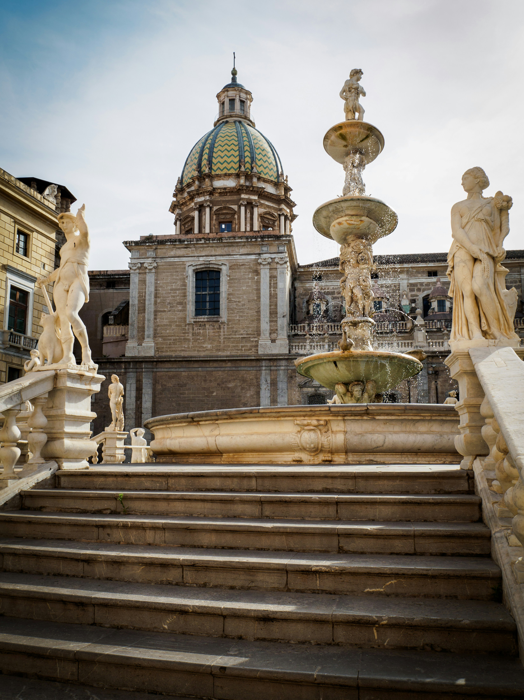
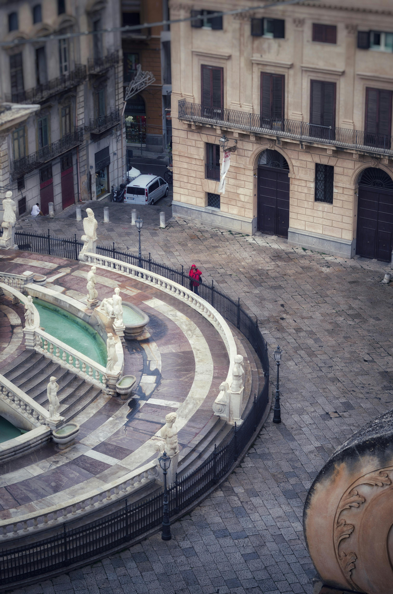
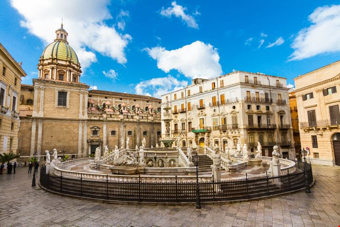
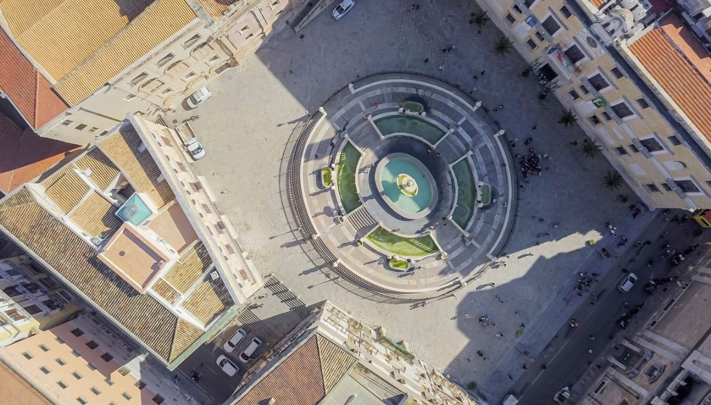

PALERMO

Piazza Pretoria, Palermo
Nel cuore pulsante di Palermo si schiude Piazza Pretoria, uno degli angoli più iconici e magnetici della città. Dominata dalla maestosa fontana che le è valsa l’audace soprannome di 'Fontana della Vergogna', la piazza è un raffinato palcoscenico barocco stretto tra palazzi storici carichi di prestigio. Tra leggende popolari e segreti aristocratici, questo luogo incanta chiunque lo attraversi, nascondendo dietro la pietra bianca del Marmo di Carrara una storia fatta di ambizione e mistero.
La storia della Piazza
Piazza Pretoria, incastonata tra via Maqueda e il Cassaro, a pochi passi dai Quattro Canti, nasconde una storia di lusso e trasformazione. Originariamente l'area ospitava semplici case e una chiesa, ma tutto cambiò nel 1573. Il Senato palermitano decise infatti di acquistare una monumentale fontana progettata a Firenze da Francesco Camilliani. Inizialmente destinata ai giardini di una villa toscana, la fontana fu venduta a Palermo per ripianare i debiti del proprietario, il figlio di Don Pedro di Toledo. Per far spazio a questo colosso di marmo, il cuore della città venne letteralmente 'aperto' demolendo gli edifici preesistenti, dando vita a quello che oggi è uno dei massimi esempi di rinascimento e barocco in Sicilia.
Fontana della Vergogna,
Il Duomo di Siracusa,
realizzata tra il 1554 e il 1555 dal fiorentino Francesco Camilliani, la fontana è un monumentale trionfo di marmo bianco disposta su più livelli. Il complesso celebra il mondo classico con un labirinto di vasche circolari popolate da divinità, creature mitologiche, tritoni e animali, il tutto sormontato da una statua centrale che simboleggia l'Abbondanza.
Palazzo Pretorio,
storico fulcro del potere cittadino e sede del Municipio di Palermo. La sua facciata monumentale osserva la fontana da secoli, offrendo una cornice rinascimentale di rara eleganza. Le imponenti aquile che lo decorano non sono solo un simbolo architettonico, ma il cuore pulsante delle istituzioni palermitane, in un dialogo costante con le sculture marmoree sottostanti.
Chiesa di Santa Caterina d'Alessandria,
se l’esterno cattura lo sguardo con la sua solennità, l'interno è una vera esplosione di bellezza: un trionfo di 'marmi mischi', affreschi luminosi e stucchi delicatissimi. È considerata uno dei gioielli più preziosi di Palermo, dove l'arte sacra raggiunge vertici di decorazione quasi ineguagliabili."
Palazzi nobiliari,
testimoni silenziosi dell'epoca d'oro dell'aristocrazia palermitana. Ogni facciata contribuisce a creare quel 'teatro barocco' che rende Piazza Pretoria uno degli spazi urbani più scenografici d'Europa."





Curiosità
Perchè Piazza della vergogna?
Il celebre epiteto "Fontana della Vergogna" nasce da un mix di malizia popolare e critica politica.
Il Pudore ferito: nella Palermo profondamente religiosa del XVI secolo, l'esposizione di tante figure completamente nude fu considerata un'offesa alla decenza.
Lo spreco di denaro: il termine "vergogna" era rivolto anche al Senato palermitano, accusato dal popolo di aver speso cifre astronomiche per un'opera così sfarzosa in un periodo di dura crisi economica e carestia.